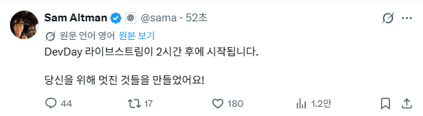
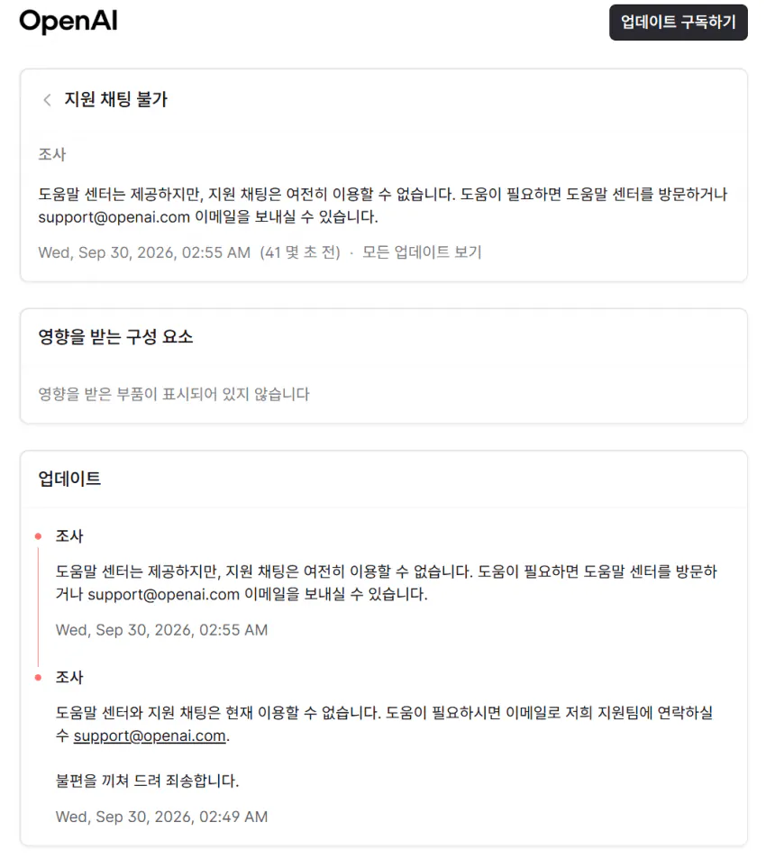

여러가지 발표한다면서 기대시켰지만

라이브 끝나자마자 사람들 환불런 때리면서 고객센터 터짐ㅋㅋㅋㅋㅋㅋ

여러가지 발표한다면서 기대시켰지만

라이브 끝나자마자 사람들 환불런 때리면서 고객센터 터짐ㅋㅋㅋㅋㅋㅋ
근데 이렇게 해서 인간 일자리 잃으면 누가 소비해 주는 거지? Ai끼리? 인간에게 소비 일으키려고 이용하는 거라 ai에겐 필요도 없는뎅
인간이 없어지겠지
엘리시움 밖에서 자급농업하거나 굶어죽는거지
Ai가 결국 엔비디아 반도체 수량싸움아님 ? 뭐 돈 더 많은 ai가 이기겠지
pro x20 구독 막은게 개악하려고 그런거였나 ㅋㅋ
그냥 pro x5 이건 상관없는거지??
지피티 plus 까지는 상관없는 거죠? 이것도 검색해 보니 깊게 파고들어야 될 질문들은 옵션을 하이/로우 등 선택해야 된다고는 하던데...